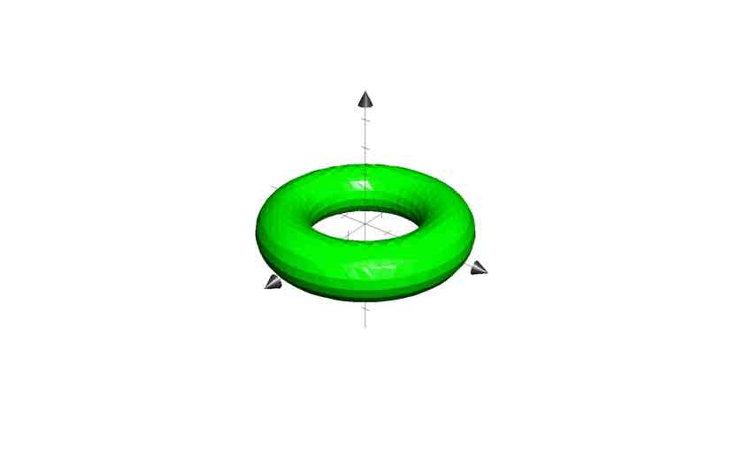

<!DOCTYPE html>
<html>
<head>
        <meta charset="UTF-8">
        <meta name="viewport" content="width=device-width, initial-scale=1.0">
        <link rel="stylesheet" type="text/css" href="../assets/styles/kry.css">
        <title>Document</title>
</head>
<body class="overview">
    <header>
        <h1 class="name">tyaryu
        
        </h1>
        <hr>
    </header>
    <main>
        <div>
        <h2>自己紹介</h2>
        <li>
            好きな食べのもの:鳥の唐揚げ
        </li>
        <li>
            所属：理学部
        </li>
        <li>
            プログラミングスキル：Python,Haskell
        </li>
        <li>
            趣味：読書、競技プログラミング、Vtuber
        </li>
    </div>
    <div>
        <h2>興味のあること</h2>
        <div>
            <span class="interested">数学</span>
            <p>
                数学基礎論に興味があります。プログラミングを始めたきっかけも定理証明支援系であるCoqに興味があって始めました。まだ基礎的な部分を勉強している最中ですが、代数や幾何学に興味があります。
                また、圏論も勉強中です。
            </p>
        </div>
        <div>
            <span class="interested">プログラミング</span>
            <p>
                関数型言語に興味があります。最近はHaskellを勉強しています。Coqに興味があって始めたこともあり、プログラミングと数学の関係や型システムなどに興味があります。競技プログラミングの
                コンテストに時々参加しています。また、Webアプリ開発にも興味があります。
            </p>
        </div>
        <div>
            <span class="interested">本</span>
            <p>
                エッセイや小説をよく読みます。好きな作家は、森博嗣、幸田ふみ、坂口安吾、J.D.サリンジャーなどです。特に最近はサリンジャーの本に興味があります。出てくる登場人物
                のひねくれているところ、作品の空気感がとても好きです。また、ライトノベルもよく読みます。『僕は友達が少ない』、や『俺の妹がこんなに可愛いわけがない』はハマりました。異世界転生もの
                も好きです。
            </p>
        </div>
         <div>
            <span class="interested">Vtuber</span>
            <p>
                hololiveが好きです。hololiveはキャラクターが魅力的なだけでなく、タレントが配信を通じて成長していく姿が見ることができてとても面白いです。また、hololiveのメンバー同士の絆の深さ
                も見ることができ、とても暖かい気持ちになります。特に好きなのは兎田ぺこらさんでいつもとても元気に配信をするところやフラグの回収、視聴者との掛け合いが魅力的です。
            </p>
        </div>
    </div>
    <div>
        <h2>連絡先</h2>
        <li>
            Twitter:@tyaryu1
        </li>
        <li>
            AtCoder:tyaryu
        </li>
        <li>
            Github:ryuji816
        </li>
    </div>
    </main>
    <footer>
    </footer>
</body>
</html>